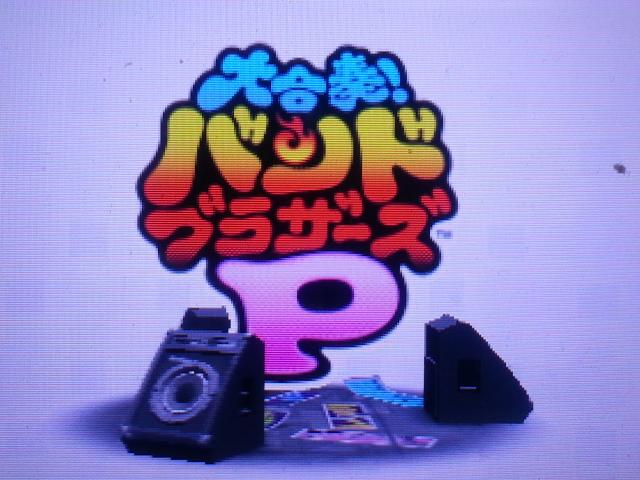
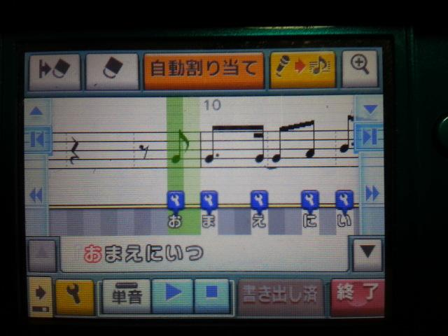
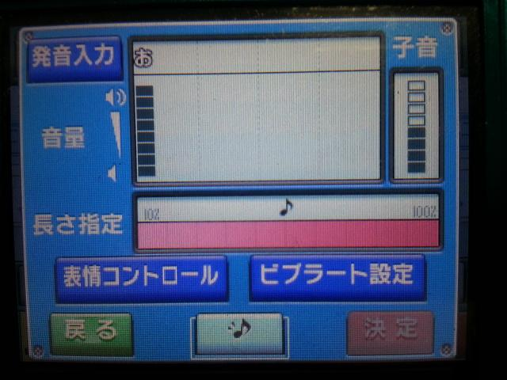
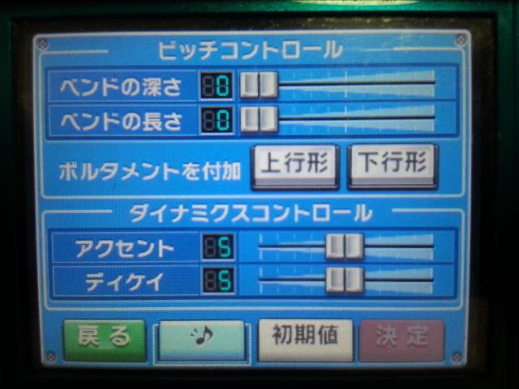
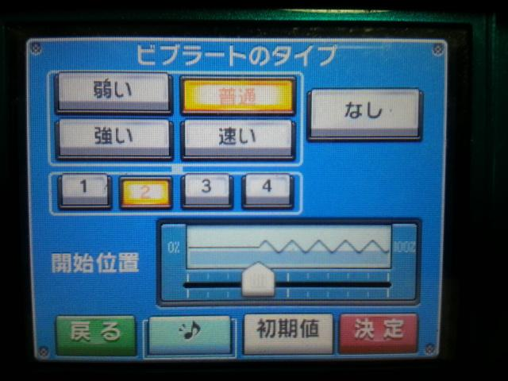

ひとりごと
任天堂の本気「大合奏バンドブラザーズＰ」(2013/11/14)
～本物のVocaloidが簡単に使えます～
今、最近任天堂が発売した、音楽ゲーム「大合奏バンドブラザーズＰ」通称「バンブラＰ」買ってみました。

ゲームの方は、基本的にシステム周りはいろいろと増えて、パワーアップしており
前作を楽しんだ方には、それなりに満足できるものだと思うので、割愛します。
と言うより、まだゲームを余りプレイしていないため、詳しいことはわかりませんが、
今作はオンラインプレイで全国の誰かとセッションできます。
相手が下手な場合は、ドラムがもたついたり、変な音がなったりするので、本当にバンド演奏しているような気分になれます。
また、以前はカラオケ目的で自分は楽しんでいましたけれど、今回はそうでないようです。
一応カラオケもできますが…
あくまで「Ｐ」(ヴォーカロイドのプロデュースのＰ)にフォーカスが当たっています。
ここでは打ち込みについて紹介していきたいと思います。
今回は、Vocaloidが使えます。
しかも、普段の任天堂が「料理ナビ」や「WiiFit」のマスコットキャラや、「どうぶつの森」の住人や「トモダチコレクション」の人間ではなく、
「YAMAHA」の正式な「Vocaloidエンジン」が使用されていることが素晴らしいです。
ただし、「初音ミク」ではありませんが…。
初音ミクを知らない人なら、声の設定次第では、初音ミクと区別がつかないと思います。
前作同様に音楽を打ち込んで、歌詞を割り当てて、いくつかのパートのメロディに対して、１音づつ細かく割り当てることができます。
自分はヴォーカロイドに精通しているわけではないので、詳しいことはわかりませんけど、
発声のタイミングや、アクセント、発声の方法、ビブラートなど、細かいパラメータを直感的で簡単に入力することができます。
ほとんど設定しなくてもそれなりな歌声を聞かせてくれるで、自分のような初心者でも楽しめています。




このように、上級者も納得の細かいパラメータで、歌い方を設定できます。
たった4,800円で、YAMAHAの正式なVocaloidで自由に歌わせることができてしまいます。
本家のVolaoid「初音ミク：Vocaloid2」は15,000円以上します。
初音ミクではありませんが、女声設定では、意外と初音ミクっぽい声で親しみやすかったです。
SUBMARIE STREET 3Pice バンブラＰバージョン
自分の好きなアニメ系の架空バンド「FireBomber」の名曲を女声Vocaloidで打ち込んでみました。
初音ミクではないけど、思ったより綺麗でミクっぽいな歌声なので、自分的には大満足です。
今作に関しては、ヴォーカロイドが好きではない方がいると思いますので、そういう方にはお勧めできないかもしれません。
バンブラＰの公式サイト

【演奏、合奏、作曲、ボカロをプロデュース】 音楽をトコトン楽しめる『大合奏！バンドブラザーズ』シリーズ最新作。 演奏、合奏、作曲に加え、新たに自分そっくりのボーカロイドを 「Produce」できるほか、楽器数や同時プレイ人数の増加、ネットワーク機能の強化など、 「Professional」仕様となった各種機能。音楽の知識があってもなくても、 だれもが音楽の世界に没頭できます。 Amazon:\3,380